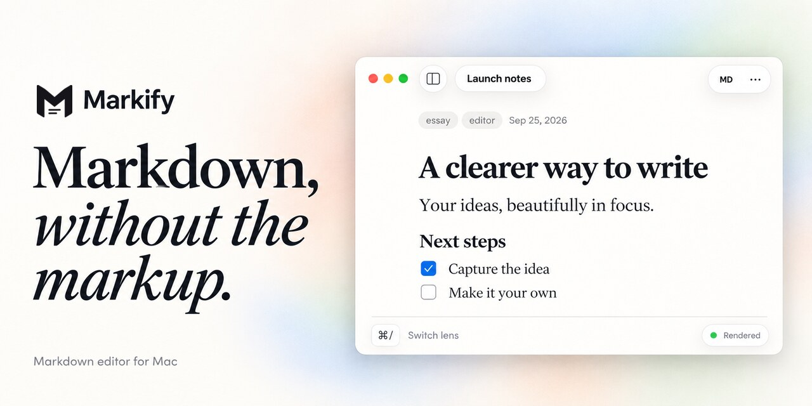

One line
Markify is a native Mac Markdown editor with one page and two lenses: edit rendered text, then press ⌘/ to see the same document as Markdown.
For writers, reviewers & curators
A few words and the real app visuals for your next article, review or app listing.
In a few words
Use these descriptions as a starting point for your story.
Markify is a native Mac Markdown editor with one page and two lenses: edit rendered text, then press ⌘/ to see the same document as Markdown.
Markify is a free Markdown editor for macOS 26. Edit a rendered document, press ⌘/ to see its Markdown source, and keep working in the same local file. Supports GFM, math, Mermaid, frontmatter and HTML/PDF export. Source available on GitHub.
Markify is a native Markdown editor for macOS 26, built for people who write READMEs, documentation and local notes. Its Rendered and Markdown lenses show the same text: edit in place, press ⌘/ to view the source, and keep your caret and scroll position. Files remain ordinary .md documents that can live alongside a project.
Markify supports GitHub Flavored Markdown, task lists, tables, code, math, Mermaid diagrams, footnotes, callouts and YAML frontmatter. A slash menu and floating format bar help with editing; HTML and PDF export help with sharing. It is free to download and use, including at work, for Apple silicon and Intel Macs. Its source is available on GitHub under MIT with the Commons Clause.
Have a Markdown file to update? Open it in Markify and edit headings, lists, links, images and tables on one rendered page. Press ⌘/ to see or change the Markdown itself. Markify saves the same local file and can export HTML or PDF. Free to use, including at work, on macOS 26.
Built by Stéphane Paquet with SwiftUI and TextKit 2.
Logos & images
Download the original assets used on this website. Keep their proportions and use screenshots as shown when covering Markify.
The app icon for reviews, listings and other coverage.
The website’s vector logo, for layouts that need a scalable image.



Browse the full set for the library, format bar, inspector and Apple Intelligence features.
At a glance